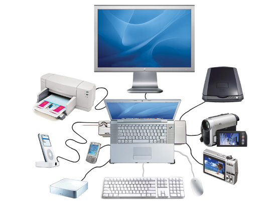

componentes físicos que se conectan a una computadora (fuera de su carcasa) para ampliar sus capacidades, permitir la interacción (entrada/salida de datos) o mejorar su funcionalidad
Periféricos: La Interacción Esencial Los periféricos son componentes de hardware fundamentales que extienden las capacidades de la computadora y permiten la interacción del usuario con el sistema, dividiéndose en tres funciones esenciales. Los dispositivos de Entrada de Información son cruciales para introducir datos y comandos, incluyendo herramientas de interacción directa como el teclado, el ratón, el joystick, el micrófono y la webcam, además del escáner, que se utiliza para digitalizar documentos físicos y convertirlos a formatos digitales. Por otro lado, los dispositivos de Salida de Información tienen la función de comunicar los resultados del procesamiento al usuario, utilizando el monitor o el proyector para la visualización de imágenes y videos, los altavoces o auriculares para la reproducción de audio, y la impresora para la conversión de documentos digitales a formato físico (papel). Finalmente, la categoría de Almacenamiento y Respaldo incluye unidades como discos duros externos, SSD externos y unidades USB, los cuales son indispensables para guardar grandes volúmenes de archivos de forma permanente y para realizar copias de seguridad (backups) de los datos.